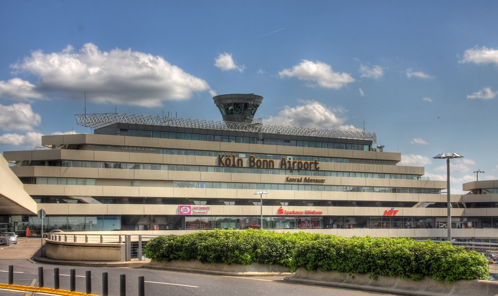

Historia
1Fundación
Colonia fue fundada por los romanos hace dos mil años y es la ciudad más antigua de Alemania. Debe su nombre a la mujer del emperador Claudius, Agripina, cuando concedió el estatus de ciudad a su "Colonia Agripina". La ciudad se convirtió en un centro de veneración, famoso por la leyenda y culto de Santa Ursula, y por eso se construyeron varias iglesias romanescas que aún permanecen en pie.
2Construcciones
En la Edad Media, Colonia era una de las ciudades más importantes del Imperio Romano y en el año 1248 se inició la construcción de su importante catedral, diseñada para recoger las reliquias de los Tres Reyes Magos. Conocida como el Dom, fue en tiempos pasados el edificio más alto del mundo y es sin duda el edificio gótico más grande del mundo.
3Impacto de guerra
La ciudad sufrió terriblemente el impacto de la Segunda Guerra Mundial, perdiendo la mayoría de su centro histórico, y tan sólo sobrevive una pequeña parte del Altstadt, junto al río, bien en su forma original o gracias a la restauración.
4Cultura
Los peregrinos de hoy en día no se acercan sólo para visitar el Dom y las iglesias romanesca, sino también para ver los fantásticos museos de la ciudad y disfrutar de la famosa hospitalidad de la ciudad en sus cervecerías. A pesar de su fuerte historia religiosa, Colonia es una ciudad con mucha marcha y su carnaval es uno de los más grandes de Europa.
¿Sabías que?
- Es la cuarta ciudad mas grande de Alemania.
- La moneda oficial en esta ciudad es el euro.
- Es la sede del carnaval más espectacular del país.
- Esta ubicada a orillas del río Rin.
- Colonia tiene más cervecerías que cualquier otra ciudad europea.
- La catedral de Colonia es el edificio gótico mas alto del mundo.
- Es la ciudad más antigua de Alemania.
- Esta compuesta por nueve municipios y 86 distritos.
- Tiene un clima continental que en invierno es frío y la nieve es frecuente, mientras que en verano existen temperaturas templadas y hay mucha humedad lo que provoca una sensación térmica de bastante calor.
- Es famosa por su cerveza Kölsch, de color claro y fermentación alta.
- Colonia es el tercer centro industrial más grande de Alemania.
¿Por qué ir a Colonia?
Colonia es conocida por ser una de las ciudades más liberales de Alemania y uno de los puntos de acceso de medios de comunicación en diferentes ámbitos como el turismo y los negocios. Los sitios que hay por visitar y de interés en Colonia son abundantes, convirtiéndola en una de las ciudades favoritas por los turistas.
Por otra parte, las zonas rurales son preciosas, los castillos bellísimos, los pueblos son como de cuento.
La torre de la catedral de Colonia ofrece una de las mejores vistas de la ciudad.Aunque si quieres que ella también participe en tus fotografías mejor es subir a la terraza del edificio de la Agencia Europea de Seguridad Aérea, al otro lado del Puente de los Candados de Colonia.
Los colonienses son personas que disfrutan de la buena vida y que parecen vivir en un permanente estado de felicidad. Durante tu viaje a Colonia no puedes olviadrte de realizar alguno de los tours cerveceros de la ciudad que te llevarán a los mejores bares y fábricas, allí contarán el porqué detrás del amor por la cerveza Kölsch en esta ciudad.
Por supuesto la cultura no se desprecia en la ciudad, hay muchos de museos para visitar en esta ciudad. Tienes pinacotecas como el Museo Ludwig, en el que Picasso se codea con los dos grandes del arte pop, Roy Lichtenstein y Andy Warhol; el Museo del Chocolate Lindt; el Museo Alemán del Deporte y las Olimpiadas o el sobrecogedor Centro de Documentación sobre el Nacionalsocialismo.
Quítate los prejuicios de encima con un par de palmaditas en el hombro, dirige tu rumbo en dirección al río Rin, y disfruta al oeste de Alemania de un lugar que te parecerá tan latino como tu ciudad natal, ¡quizás más!
¿Qué visitar?

Catedral de Colonia
Está situada en el centro de la ciudad de Colonia. Con sus 157 metros de altura fue el edificio más alto del mundo hasta la culminación del Monumento a Washington en 1884, de 170 metros. Es el monumento más visitado de Alemania. Es además la sede del arzobispo de Colonia y de la administración de la arquidiócesis de Colonia. Fue declarada Patrimonio de la Humanidad por la Unesco en 1996.
Museo del chocolate
Está situado en el distrito de Colonia, Altstadt-Süd en la península Rheinau. En la exposición, toda la historia del chocolate, como se muestra desde sus orígenes en los olmecas, mayas y los aztecas a los productos schokoladehaltigen hoy y sus métodos de fabricación
Museo Ludwig
El Museo Ludwig es un museo de arte de Alemania, uno de los museos más importantes de la ciudad de Colonia. Contiene una gran variedad de obras del siglo XX y XXI, desde el arte abstracto, el expresionismo alemán y el surrealismo hasta el Pop Art.
Phantasialand
Phantasialand es un parque temático localizado en Brühl, en el estado federado alemán de Renania del Norte-Westfalia, que recibe aproximadamente dos millones de visitantes anualmente.
Palacios de Augustusburg y Falkenlust
Los Palacios de Augustusburg y Falkenlust se encuentran en la ciudad de Brühl, en el estado federado de Renania del Norte-Westfalia de Alemania, muy cerca de la ciudad de Colonia. Son dos de los monumentos más significativos de los estilos barroco y rococó de Alemania.
Cologne Zoological Garden
Uno de los principales jardines zoológicos de Alemania. Inaugurado en 1860, el zoológico ocupa 20 hectáreas a lo largo del río Rin en Colonia. Cerca de 6.000 especímenes de 650 especies se exhiben en sus atractivos terrenos.
Hohenzollern Bridge
Es el puente ferroviario más utilizado en Alemania, tiene totatl 6 vías férreas. El puente tiene regularmente más de 1200 trenes que pasan por el puente diariamente. En la acera de un lado del puente, la gente desde 2008 colocó candados de amor en la cerca entre la acera y la línea del tren.
Rheinpark
Colonia tiene un buen número de pulmones verdes. De entre ellos, destaca el Rheinpark. Sus 40 hectáreas de jardines, zonas de ocio y árboles se encuentran en la orilla derecha del Rin.
KölnTriangle
Cruzando el Puente de Hohenzollern llegarás al Koelntriangle, el mejor mirador de la ciudad. Este moderno edificio acristalado de más de 100 metros de altura que alberga oficinas y la Agencia Europea de Seguridad Aérea, tiene una terraza en el piso 28 desde la que puedes disfrutar de unas espectaculares vistas panorámicas de 360 grados de toda la ciudad y en especial de la Catedral, al quedar justo enfrente.
¿Dónde alojarse?
Apartment Köln Ensen

Dónde hospedarse
Apartment Cologne
Dónde hospedarse
Stern am Rathaus
Dónde hospedarse
¿Cómo llegar?
La ciudad de Colonia tiene una red de transportes de las más importante del Oeste de Alemania. No importa si decides o tienes que viajar en tren, en coche o por avión. Nueve autopistas te llevarán rápidamente hasta el centro de La ciudad de Colonia.
Cómo llegar por aire a Colonia
El aeropuerto de la ciudad de Colonia (Alemania) se encuentra ubicado a 16 km hacia el sur. El edificio central del aeropuerto cuenta con excelentes instalaciones que incluye tiendas, oficinas de correo, cajeros, bancos, cafeterías y restaurantes entre otros.
Recomendaciones para buscar vuelos a Colonia:
Cómo llegar en tren a Colonia
Todos los trenes provenientes de Europa terminan su trayecto en la estación central de tren de Colonia (Hauptbahnhof Hbf). Ésta posee una estación satélite llamada Bahnhof Deutz que se ubica a orillas del río Rin, cercano al Messe.
Cómo llegar por carretera a Colonia
Para llegar a Colonia desde el resto de Alemania, la mejor opción y quizás la más rápida sea por las rutas Autobahn (A).
La A2 llega hasta Berlín, la A3 hasta Frankfurt, la A4 a Bélgica y la A1 hasta Hamburgo. La asociación automovilística más importante de Alemania es ADAC.
Festivales

Carnaval
Se realiza el 11 de noviembre a las 11:11 horas en la Plaza Heumarkt.
Summerjam Festival
Es uno de los festivales más importantes de la música en Europa. Tiene como género principal al Reggae, pero también alberga a géneros como el dancehall y el hip hop.
Kölner Lichter
Es un evento de música y fuegos artificiales que se lleva a cabo todos los veranos desde 2001 en Colonia. Es el mayor espectáculo de fuegos artificiales sincronizados con música de Europa .
Christopher Street Day
Es una celebración y manifestación LGBT anual que se celebra por los derechos de las personas LGBT y contra la discriminación y la exclusión.
Weihnachtsmärkte
El mercado navideño de Colonia ofrece joyería, cosas para el hogar, decoraciones y finas artesanías navideñas.
Festival Rin en llamas
Es un evento de fuegos artificiales y música, donde flotas de barcos se iluminan desde el centro del Rin
Excursiones
Paseo en barco al atardecer
El paseo al atardecer por el Rin es la opción ideal para los más románticos. La luz dorada de la tarde ilumina los edificios de Colonia proporcionando un recuerdo inolvidable de la ciudad.
Excursión a Düsseldorf en tren
Düsseldorf es una ciudad que combina a la perfección la arquitectura moderna con los edificios históricos. ¿Quieres conocerla? Explorarás sus maravillas con esta excursión en tren desde Colonia.
Visita guiada por Colonia
Con esta visita guiada por Colonia descubrirás los rincones más fascinantes de la ciudad. La Catedral, Fischmarkt, la iglesia Gran San Martín o el casco histórico serán algunos de los lugares que te dejarán sin palabras.

Paseo en barco por Colonia
Conoce Colonia de la mejor manera, disfrutando de un paseo en barco por el río Rin. Descubrirás la apasionante historia de la ciudad mientras admiras sus principales monumentos.